Adjust the Page Size.

From the left-hand side menubar, select Reports > Users Report.
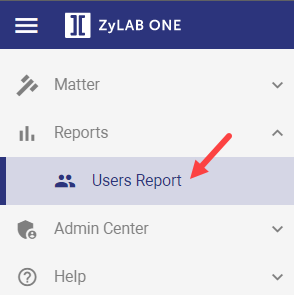
The Users Report overview appears:
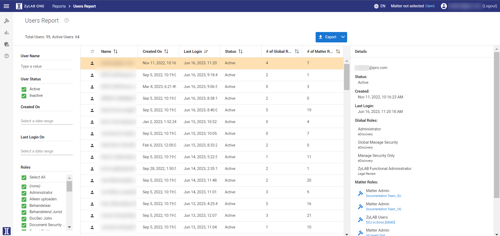
By default, users with Active and Inactive User Status are displayed. Deselect the checkbox(es) to show only Active or Inactive users.
Note: Users that have not yet logged into ZyLAB ONE, are listed as Inactive.
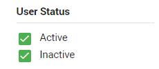
Filter users by selecting Roles, specifying the Created On and Last Login time frame, or searching for a User Name.
By default, all Roles are included. Disable the Select All checkbox to deselect all roles. Select one or more roles by checking the relevant boxes.
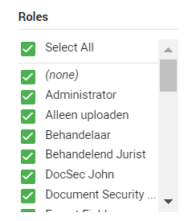
In Created On, define the user creation date range. Click Select a data range to specify the time frame. Click OK when finished.
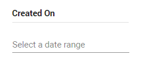
In Last Login On, define the users' last login date range. Click Select a date range to specify the time frame. Click OK when finished.
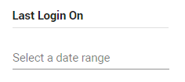
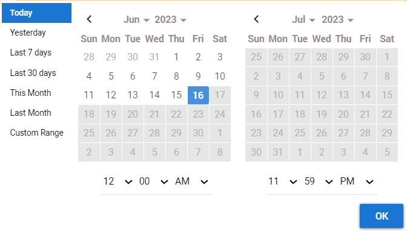
Search for specific (in)active user(s) by typing their name into the User Name field.
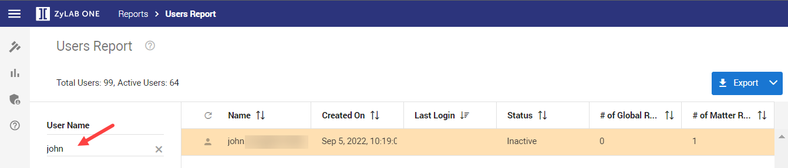
Click Refresh in the Name column to update the list of (in)active users.
Adjust the width of the columns. Drag and release column headings.
Reposition the columns. Drag and drop column headings from left to right, and vice versa.
Sort by column. Click on the arrows to arrange by ascending/descending.
Adjust the Page Size.
Click on a specific user to view their details in the User Details pane.
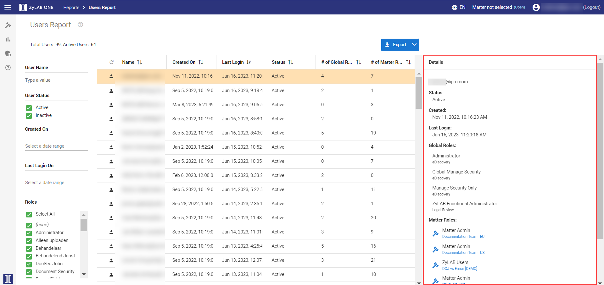
(Optional) Click on a matter link to open.
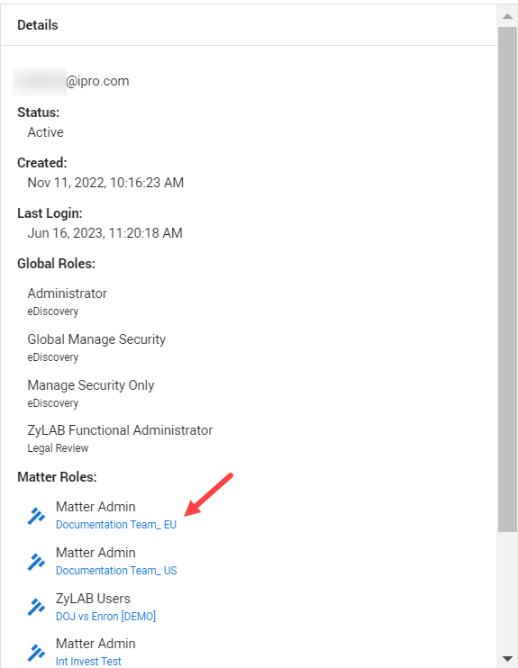
Click Export, download as CSV-file or as Excel file. Next, choose
Only Active Users
Details the Global and Matter role(s) and Document Security Rule(s) assigned to each active user, with corresponding Matter ID.
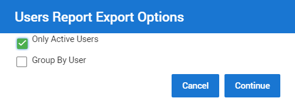
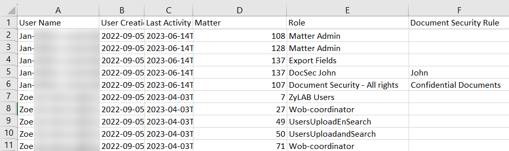
Group by User
Details the Global and Matter role(s) assigned to each (in)active user.
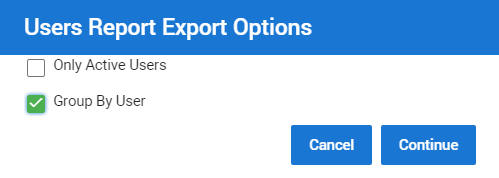
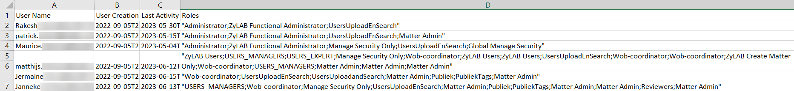